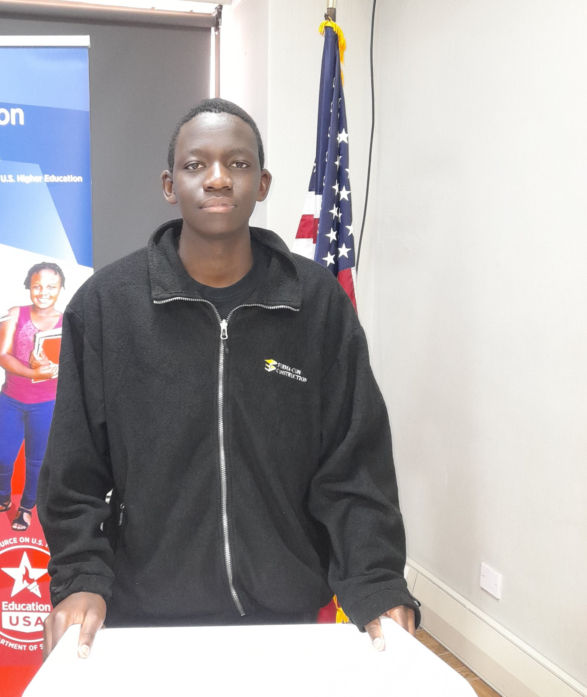

$ whoami # backend • sre • dev0ps
Shelton Mutambirwa
Backend & Site Reliability Engineer focused on deploying AI-driven microservices, hardening distributed systems, and keeping uptime sacred. I love Linux, automation, and observability.
$ cat system.log
- Location: Bulawayo, Zimbabwe
- Current: EconetAI — AI & Digital Transformation Intern
- Focus: Microservices, DevOps/SRE, Monitoring & Logging
- Favorite tools: Docker, Linux, PostgreSQL, Redis
Mission control
Reliability-first engineering
I design systems that stay up: logging, alerting, performance tracking, and smart rollback strategies.
DevOps in action
Dockerized services, CI/CD pipelines, and Linux automation keep teams shipping without fear.
Data-driven decisioning
Dashboards, data pipelines, and analytics that translate signals into real product improvements.
Quick access
Experience
AI microservices, distributed systems, and reliability engineering.
open experience log →